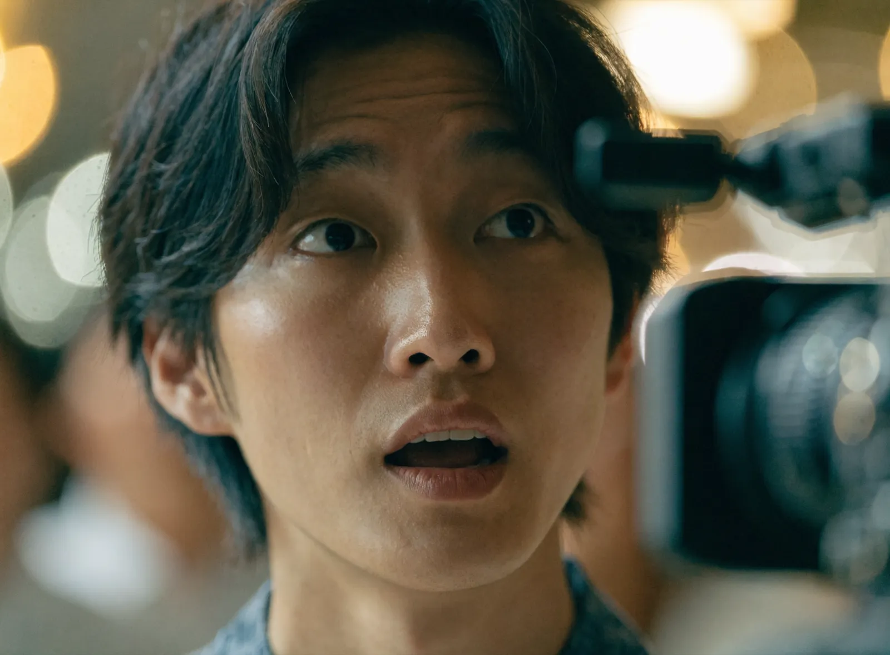
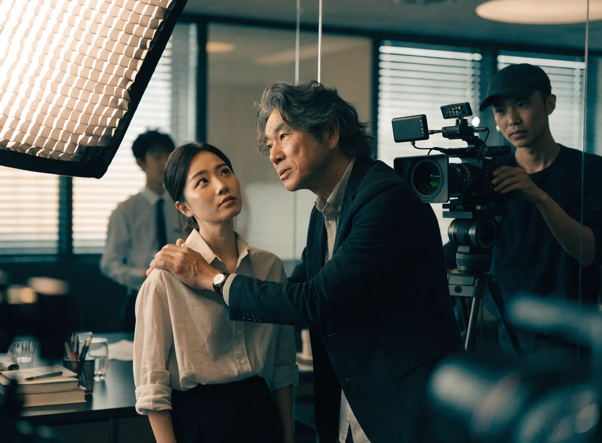

採用動画制作 ｜ 東京 ｜ 求人
応募が集まらないのは
「伝え方」の問題かもしれません
東京で採用動画・求人動画をお探しの企業さまへ。NOKTOAは、御社のビジネスモデルと採用課題を解読したうえで、応募とミスマッチ防止の両方に効く採用動画を、企画から撮影・編集まで自社完結で制作します。
企画・撮影・編集まで自社完結 ／ 東京23区を中心に出張撮影対応 ／ ご相談・お見積もりは無料
なぜ応募が集まらないのか
求人広告にお金をかけても
「欲しい人」が来ない理由
採用がうまくいかない原因を「予算不足」だと考える企業は少なくありません。しかし実際には、求人媒体への出稿を増やしても応募が伸びない、来ても自社に合わない人ばかり——という相談を東京の企業さまから数多くいただきます。
背景にあるのは、求職者が「文字情報だけでは、その会社で働く実感を持てない」という構造的な問題です。給与や勤務地は他社と横並びで比較され、最後は条件の優劣だけで決められてしまいます。
御社が本当に伝えたい「どんな人が、どんな想いで、どんな空気の中で働いているのか」という、条件では測れない価値は、求人票の文字には収まりきりません。そして、その非言語の情報こそが、求職者の入社意欲の源泉であり、入社後のミスマッチを防ぐ最大の予防線になります。採用動画は、それを届けるための手段です。
働く現場の温度は、
動画でしか正確に伝わらない。
採用動画がもたらす3つの価値
「会社紹介ビデオ」では
応募は動きません
世の中の採用動画の多くは、オフィスや社員インタビューを並べただけの「会社紹介ビデオ」にとどまります。きれいでも視聴者の心が動かず、応募につながらない。これは、動画を「制作物」として捉え、「採用という経営課題を解決する装置」として設計していないことが原因です。NOKTOAは、応募につながる動画を次の3つの視点から設計します。
応募を増やす
働く魅力を具体的に伝え、「ここで働きたい」という応募の動機をつくります。
ミスマッチを防ぐ
リアルな現場を見せることで、価値観の合う人材だけが集まり、早期離職を減らします。
資産として残る
採用サイト・求人媒体・SNS広告へ展開でき、一度の制作が長く働き続けます。
NOKTOAが選ばれる理由
戦略と表現を
一社で完結させる
NOKTOAは経営理念に「『伝える』を『資産』へ。」を掲げ、御社の事業構造・採用ターゲット・競合との違いを徹底的に解読することから制作を始めます。「誰に、何を感じてもらい、どの一次行動を取ってもらうか」を一本の戦略線として設計し、映像はその戦略を実現する表現として組み立てます。
- 経営・事業の視点から採用課題を解読し、応募につながる動画を設計する戦略性
- 企画・撮影・編集をすべて自社で完結。中間マージンがなく、意図がブレない一貫制作
- クリエイティブ統括は業界20年のキャリア。ブランドの世界観を損なわない映像品質
- 採用サイト・求人媒体・SNS広告など、配信先に合わせた最適なフォーマットで納品
私たちが大切にする一瞬
言葉にならない「らしさ」を
切り取る
採用動画の主役は、立派な設備でも美しい映像でもなく、そこで働く人の表情と言葉です。私たちは、社員が自分の言葉で語る瞬間や、現場に流れる自然な空気を丁寧に捉えます。作り込みすぎず、しかし最も魅力的に——その絶妙なバランスを設計します。


作った動画は、どこで活きるのか
撮影前に「どこで使うか」を決めることが 成果を分けます
採用動画は「作ること」ではなく、「求職者の目に触れる場所で使い続けること」で成果を生みます。NOKTOAは、配信先を想定した設計を最初から行います。
- 採用サイト：ファーストビューに置き、エントリーへの心理的ハードルを下げる
- 求人媒体・スカウト：文章では伝わらない情報を補強し、返信率を高める
- SNS・採用広告：転職潜在層にもリーチ。媒体ごとの尺・縦横比に最適化
採用動画は、一度作って終わりではありません。求職者の心を動かし、応募という行動を生み、入社後の定着にまで貢献する——そんな「採用の資産」を、私たちはつくります。
— 株式会社NOKTOA
制作の流れ
ヒアリングから納品まで 約4〜6週間
すべての工程を自社で担当します。
ヒアリング・課題解読
事業内容・採用ターゲット・現状の課題を伺い、動画で解決すべきゴールを定義します。
企画・構成設計
誰に何を伝え、どの行動を取ってもらうか。応募につながるストーリーと構成を設計します。
撮影
東京都内の御社オフィスや現場へ伺い、働く空気感をそのまま映像に収めます。
編集・納品
採用サイト・求人媒体・SNSなど、配信先に最適化したフォーマットで仕上げてお渡しします。
料金
御社の採用課題に合わせて設計します
採用動画の費用は「一律いくら」ではありません。採用したい人物像、撮影の規模、動画を使う場面は会社ごとに違い、必要な工程も変わるからです。NOKTOAは決まったパッケージを売るのではなく、ご予算と目的を伺ったうえで、その範囲で最も成果が出る構成を逆算してご提案します。
スモールスタート
既存素材や最小限の撮影を活かし、費用を抑えて着手。まず社内・現場の反応を見たい方に。
スタンダード
企画から入り、1日の撮影でしっかり作り込む。多くの企業が選ぶバランス型の構成です。
フラッグシップ
複数日撮影やキャスティングで、妥協なく世界観を表現。採用の柱となる一本に。
「まず1本、小さく試したい」も「採用の柱として本格的に作りたい」も歓迎です。最初から大きく投資する必要はありません。成果を見ながら段階的に広げていける、柔軟な進め方をご提案します。企画・撮影・編集を自社で完結するため中間マージンがなく、同じ品質でもコストを抑えられるのも私たちの強みです。
ご予算がまだ固まっていなくても大丈夫です。「これくらいでどこまでできる？」というご相談から、相場感の整理もご一緒します。
よくあるご質問
東京で採用動画を作る場合の料金はいくらですか？
映像制作は1件60万円〜（税別）です。企画・撮影・編集まで自社完結のため中間マージンがありません。撮影日数・出演者数・尺によって変動するため、まずは無料でお見積もりいたします。
採用動画の制作期間はどれくらいですか？
ヒアリングから納品まで約4〜6週間が目安です。企画1〜2週間、撮影1日、編集2〜3週間が一般的な流れです。お急ぎの場合はご相談ください。
撮影は東京のどこまで対応できますか？
東京23区を中心に都内全域に対応します。本社は世田谷区三軒茶屋。渋谷・新宿・品川などへの出張撮影もスムーズです。
小規模な会社でも依頼できますか？
もちろんです。むしろ採用予算が限られる企業ほど、1本の動画を戦略的に活用する効果が大きくなります。スタートアップや少人数の企業さまの実績も多く、ご予算に合わせた最適な構成をご提案します。